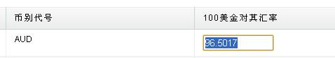
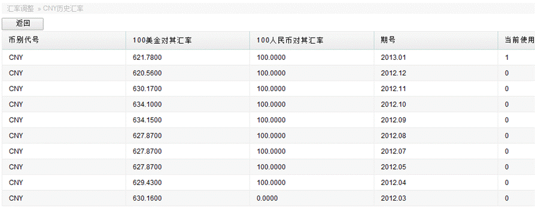
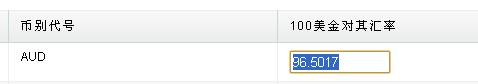
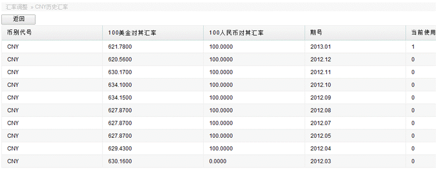

汇率调整
入口，财务管理—>汇率调整，可见系统已录入的币别。

点击添加币种可进行币别的增加，财务每月按当月首日工商银行的现汇购入价进行汇率调整，单击变为可编辑状态，直接进行汇率调整。s

点击“币别名称”可以查看该币别的历史汇率。

入口，财务管理—>汇率调整，可见系统已录入的币别。
点击添加币种可进行币别的增加，财务每月按当月首日工商银行的现汇购入价进行汇率调整，单击变为可编辑状态，直接进行汇率调整。s

点击“币别名称”可以查看该币别的历史汇率。
